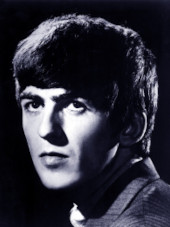
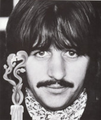

the
BeaTles
The Beatles foi uma banda de rock britânica formada em 1960 na cidade de Liverpool. Formada por John Lennon, Paul McCartney, George Harrison e Ringo Starr, é considerada a banda mais influente de todos os tempos. O grupo fez parte do desenvolvimento da contracultura da década de 1960 e do reconhecimento da música popular como forma de arte.
Membros:
Jhon
Lennon
John Winston Ono Lennon (Liverpool, 9 de outubro de 1940 – Nova Iorque, 8 de dezembro de 1980) foi um cantor, compositor e ativista da paz britânico que fundou os Beatles, a banda de maior sucesso comercial na história da música popular. Sua parceria de composição com o colega de banda Paul McCartney foi uma das mais célebres da história da música.
Paul
MacCartney
Sir James Paul McCartney CH, (Liverpool, 18 de junho de 1942) é um cantor, compositor, multi-instrumentista, empresário, produtor musical, cinematográfico e ativista dos direitos dos animais britânico. McCartney alcançou fama mundial como membro da banda de rock britânica The Beatles, com John Lennon, George Harrison e Ringo Starr. Lennon e McCartney foram uma das mais influentes e bem sucedidas parcerias musicais de todos os tempos, "escrevendo as canções mais populares da história do rock"
George
Harrison

George Harrison (Liverpool, 25 de fevereiro de 1943 – Los Angeles, 29 de novembro de 2001) foi um guitarrista, cantor, compositor, produtor musical e cinematográfico britânico que obteve fama internacional como guitarrista dos Beatles. Geralmente chamado de "o Beatle quieto", Harrison aderiu ao hinduísmo e ajudou a ampliar os horizontes dos outros Beatles assim como seu público ocidental ao incorporar instrumentos indianos na música do grupo
Ringo
Starr

Richard Starkey Kt, (Liverpool, 7 de julho de 1940), mais conhecido pelo seu nome artístico Ringo Starr, é um músico, compositor e ator britânico, que ganhou fama como baterista dos Beatles. Além de atuar como baterista, Starr foi intérprete de canções de sucesso dos Beatles, como "With a Little Help from My Friends", "Yellow Submarine", "Good Night" e seus covers de "Boys" e "Act Naturally".